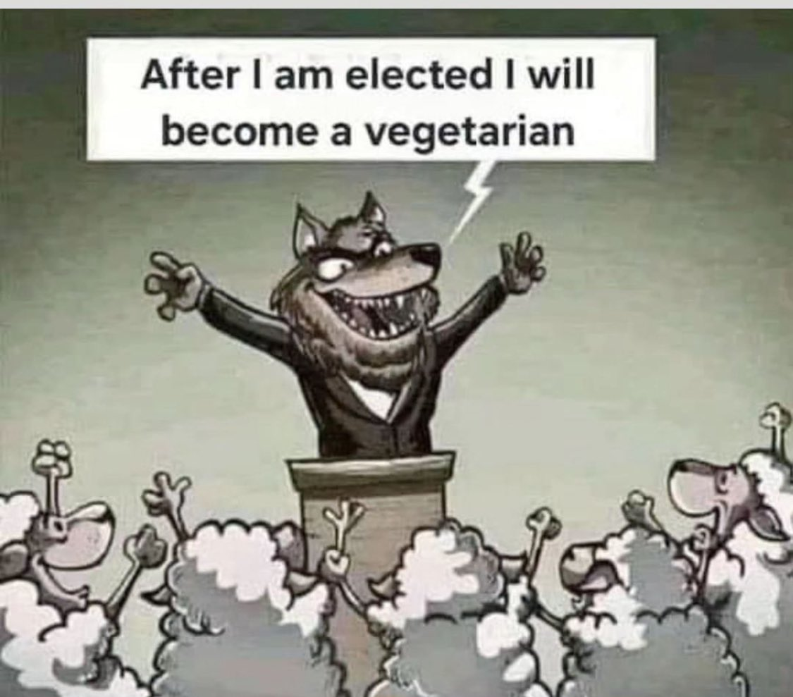

@rawbooty2 on X.com
Version 1.0 · November 10, 2026

The scenario is all too familiar. Someone we know votes for a politician who represents a very real threat to things they claim to value. In school, we are taught how history is filled with examples of horrible people rising to power through perfectly legal and democratic means.
The question is why.
Why do people vote against their own self-interest?
Or, as the comic rather flippantly suggests, why do sheep vote for wolves?
This is both a highly controversial and nuanced topic. In fact, entire books have been written attempting to answer it, and I have no such aspirations here. My goal is much simpler. I’m not trying to explain every aspect of political behavior; instead, I want to sketch what I believe is a plausible explanation for why otherwise intelligent people sometimes make decisions that appear obviously self-destructive.
The reason this phenomenon is so difficult to understand is that we assume self-interest is a simple thing. What is cognitively most comfortable for us is to imagine that people naturally pursue prosperity, safety, freedom, and opportunity. So, when someone appears to vote against those things, we immediately conclude they are acting irrationally. And this is where things get complicated, fast.
Human beings don't possess a single interest. We possess many. And often these interests conflict, even with our own long-term interests.
Identity Before Policy
The first thing to understand is that people commonly define themselves by comparing themselves to other people. Instinctively, we seek groups to which we feel we belong. These groups might be racial, religious, professional, political, ideological, gender-based, cultural, regional, or something else entirely.
Where this behavior is most visible is in the all-too-familiar high-school cliques. In this setting, athletes gravitate toward athletes, musicians toward musicians, and nerds toward fellow nerds.
And while we may not want to admit it, as adults, we really are not fundamentally all that different from our grade-school selves. What changes in how we associate and identify is largely a product of our environment.
School was a small, relatively closed system. Leave the educational system, and you become part of a larger and more complicated system known simply as: the world. As for the underlying behavior? It remains remarkably constant for most.
Now, it’s useful to understand that a large part of this process is social in nature. Humans are deeply tribal animals. We naturally seek out groups where we feel accepted, valued, and understood. Some of this is practical, as groups provide opportunities, protection, and access to resources. Some of it is emotional, as belonging gives us a sense of identity and purpose. Regardless of the reason, membership in a group helps us understand our place within the social order. For many people, these affiliations become inseparable from their sense of self.
Regardless of individual reasons, or whether those structures are even real or simply imagined, the way these identities become psychologically meaningful to the individual is critical to understanding why people make decisions. It’s also important to recognize that people possess many, often conflicting, tribal identities simultaneously. So, for example, I might identify as a business owner, a father, an American, a member of a religion, a participant in a political movement, and perhaps a dozen other things all at once. My associations are numerous, yet not of equal importance.
Some of our associations are far more important to us than others, and their importance may be entirely contextually or temporally dependent. Further, our understanding, and thus the weighting of these rankings of associative categories, is constantly in flux as our understanding of the world and ourselves evolves across the natural arc of our lives.
So, a person who grew up as a racial minority in a community that valued athletic performance may learn to prioritize athletic achievement over racial identity. Another individual may experience the exact opposite and prioritize racial identity. What matters is not the category itself, but the social value attached to it, how that value translates into social status, and how it reinforces one's ego.
Unsurprisingly, people tend to naturally prioritize the identities that provide status, acceptance, opportunity, and meaning.
Why Status Matters in Decision-Making
What few people consciously realize is that social status is one of the most important currencies human beings possess, as it determines access to resources, protection, mating opportunities, cooperation, and influence.
The higher your status, generally, the more access you have to the things you want. Lower status means fewer opportunities, but more importantly, greater vulnerability.
As a modern, likely educated, likely Western person, the world looks very different to you from the tribal environments in which humans evolved. Yet the foundations of society, and much of the underlying psychological machinery, remain very much the same. As a result, threats to social status often feel far more significant than they objectively are.
This presents a rather uncomfortable truth for many: social rejection is far more frightening than actual physical harm. There’s a reason we used to teach our kids the familiar phrase, “Sticks and stones may break my bones, but words will never hurt me.” So strong is this belief that, as parents, we are often forced to confront our children's distress and help them understand that insults, though painful, are less harmful than bodily injury. In this we attempt to calibrate perspective.
And all of this sounds highly irrational until you realize that most people experience social or reputational injury constantly, yet actual serious physical danger is rarely, if ever, experienced by most. This fact conditions us. As a result, we become highly attuned to social injury, yet pretty inept at avoiding actual bodily harm.
Think about just how common, and traumatic, embarrassment, humiliation, and social exclusion are for most people. Physical catastrophe is comparatively rare, and when it does happen, it is often followed by social sympathy, status, and empathy.
The net effect is that, over time, avoiding social regression becomes deeply embedded in our decision-making process—so much so that our response is often reflexive.
The Problem of Time
Time is another incredibly important piece of the puzzle. Psychologists refer to this phenomenon as temporal discounting. This is where human beings naturally place more weight on immediate consequences than on distant ones.
The famous Stanford marshmallow experiment illustrates this concept well. In this study, children were offered a choice: one marshmallow immediately or two marshmallows if they waited.
What surprised many observers was not that some children chose immediate gratification; it was the fact that the results varied so widely, forming a distribution.
We naively like to assume that all children will choose two over one. But the decision isn't so simple. Some kids perceive now as more valuable than later. As a result, not everyone makes the same choice.
This study has become foundational to our understanding of how human beings vary in their ability to tolerate short-term discomfort in pursuit of long-term rewards. In the world of politics, this characteristic becomes critically important when crafting propaganda.
Think about it: political outcomes often unfold over years or decades, yet an election is decided over a much shorter time span. The impact on the voter is then a complex matrix of costs and benefits with highly variable time dependence.
This variability in timing leads to some rather perverse social consequences as immediacy bias overwhelms a significant majority of people.
The result: if you vote against your social group, your friends will likely criticize you tonight, then your coworkers tomorrow, and your family the day after. A decision with no immediate political consequence to you can cause your reputation to suffer instantly.
So, what do most people do? They choose the single marshmallow.
Why Sheep Vote for Wolves
This brings us back full circle: Why do sheep vote for wolves?
The answer is uncomfortable, yet unavoidable: the sheep condition themselves to either (a) no longer see themselves primarily as sheep or (b) convince themselves that the wolf in question is somehow special and thus not really a personal threat.
Making this kind of shift is highly dissonant for most, as the individual knows they are supporting a very real threat. But that threat is more philosophical and distant than their tribal identities and psychic anchoring to the groups that serve to quite literally define them.
Once this shift occurs, evaluating the candidate becomes secondary. Defending the group becomes primary, and the vote stops being about policy. It becomes a highly emotional, and thus often public, expression of social allegiance. It is at once a declaration of membership and an expression of identity, and the wolf understands this perfectly.
Study political theory, and you will see that successful political actors have always understood and used this dynamic for personal gain.
When running for office, the goal is not to convince voters that every policy is good. The goal is to convince voters that loyalty to the group is good. Once this has been achieved, any criticism of the candidate begins to feel like criticism of the voter themselves. The result? Criticism of the candidate becomes a personal slight against the voter, provoking a reflexive defensive posture that strengthens the voter's loyalty and emotional bond to the candidate rather than weakening it.
This is why you see such emotional outpourings for candidates who are often the most dangerous.
Conclusion
We all like to assume that everyone will, or perhaps more accurately, can, wait for two marshmallows rather than indulge right now. Yet people all too often go to great effort to justify the logic of one right now.
I do think it safe to say that people rarely vote against what they perceive to be their highest-priority interest. The problem is that long-term prosperity, freedom, and security are often not the highest-priority interests. We have other, more pressing interests competing for attention, like belonging, conservation or advancement of status, preservation or exhibition of our identity, avoiding shame, protecting valued personal relationships, and maintaining our social standing.
So, when faced with a long-tail decision whose impact won't be felt for months, or likely even years, it's often far more comfortable, more emotionally satisfying, to set aside our long-term concerns and instead focus on what is most socially expedient.
And yes, all of media and politics seek to exploit this weakness.
So, the sheep do not usually vote for the wolf because they believe the wolf will eat them. They vote for the wolf because other considerations have become more immediate, more emotionally compelling, or more central to their identity than the distant risk represented by the wolf.